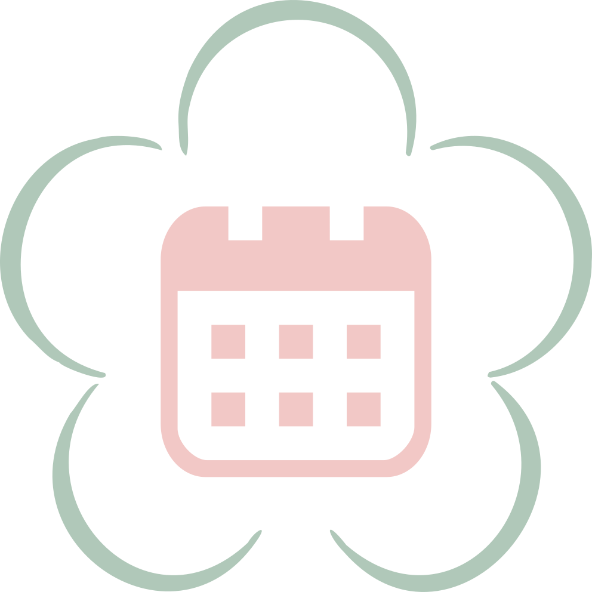
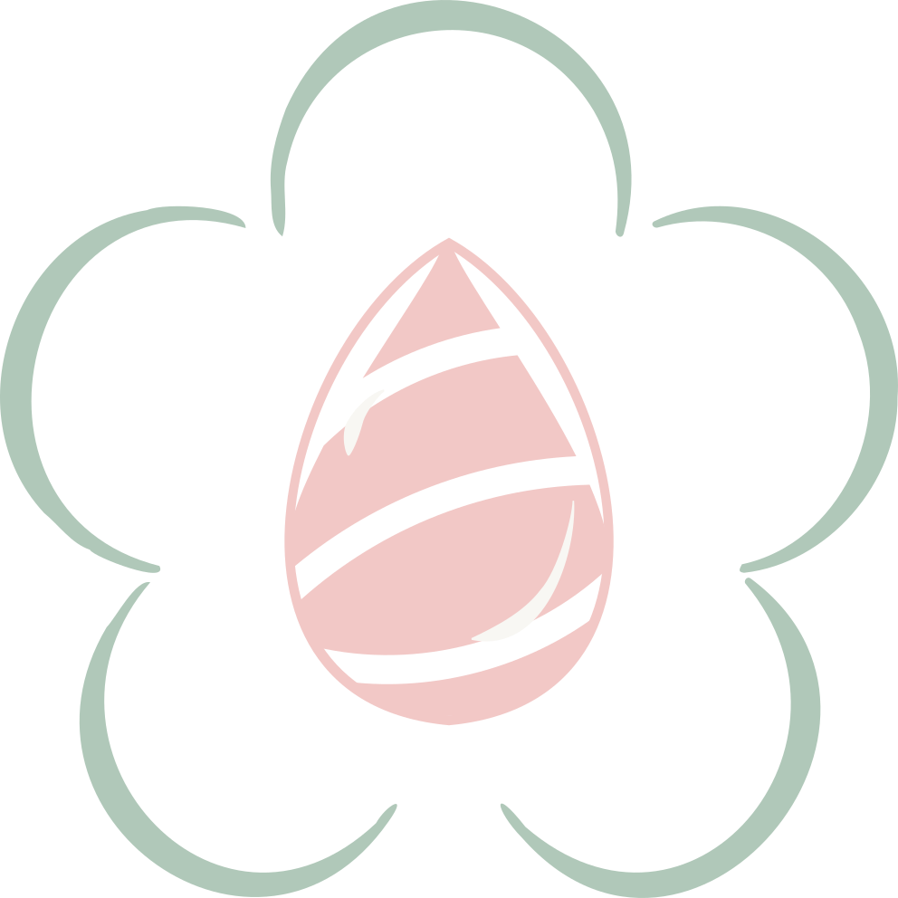

不再被效率裹挟，不再被红点倒计时催促。轻梅用极致的东方留白，为你提供一个可以安心休眠的数字空间。
ENTER SANCTUARY →在充满未读红点与待办清单的数字时代，“轻梅”是一个逆行的品牌。我们不追求更高效的时间管理，而是主张将时间的控制权交还给自我。我们相信，无所事事的虚度和不带评判的记录，本身就是最高级的治愈。
不去定义每一分钟，交还给自然的节奏。留白不是空白，而是孕育无限可能的心理空间。在我们的视觉系统中，大量退让的宣纸白正是这种哲学的物理投射。
拒绝冰冷的效率网格，用圆融的弧线包裹情绪。品牌辅助图形摒弃了锐利的折角，采用柔和生长的线条，隐喻着我们致力于构筑一个可以卸下所有防备的安全避风港。
拾取山野枯枝进行无色盲压，只记录真实的物理触感。
在青草间寻一处孤岛，静观落花触碰水面，接住所有疲惫。
卸下数字设备进入物理真空，在极致的安静中找回呼吸。

时间不应是布满待办事项的格子，而应是宣纸上自然晕染的墨迹。我们反对数字时代的“强制监工”，主张用“留白”代替“填满”。在轻梅的哲学里，无所事事的虚度，本身就是对时间最高级的尊重。

情绪没有对错，只有泛起与消散。每一丝细微的感受，都如同滴落水面的涟漪。我们为你提供一个绝对安全的心理容器，不带评判地记录这些灵魂碎片。点滴的累积，最终构成了完整的自我。